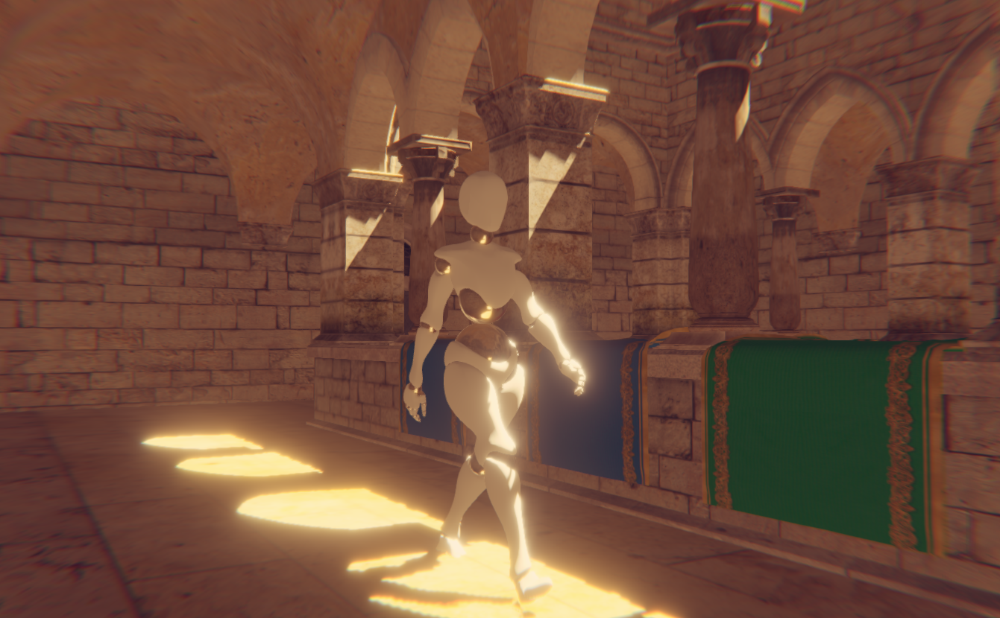

Litescene is a scene graph library for WebGL with a component based hierarchical node system. It comes with a realistic rendering pipeline and some interesting components to make it easier to build and share scenes.
- Component based node system
- Realistic rendering pipeline, it supports shadows, reflections, textures for all properties, etc
- Material system that automatically computes the best shader, making it easy to control properties
- Resources Manager to load and store any kind of resource ( textures, meshes, etc)
- Serializing methods to convert any Scene to JSON
- Parser for most common file formats
- Easy to embed
It uses its own low-level library called litegl.js

WebGLStudio
Litescene has been created to work together with WebGLStudio, an open source online 3D editor. From WebGLStudio you can export the JSON file containing all the info and use it in your LiteScene.
Usage
Include the library and dependencies
<script src="external/gl-matrix-min.js"></script>
<script src="external/litegl.min.js"></script>
<script src="js/litescene.js"></script>
Create the context
var player = new LS.Player({
width:800, height:600,
resources: "resources/",
shaders: "data/shaders.xml"
});
Attach to Canvas to the DOM:
document.getElementById("mycontainer").appendChild( player.canvas )
or you can pass the canvas in the player settings as { canvas: my_canvas_element }
Load the scene and play it:
player.loadScene("scene.json");
Basic Examples
- Simple scene: events are captured manually and only takes advantage of the render engine
- Complex scene: using the LS.Player
- Loaded scene: loading an existing scene created with WebGLStudio
Documentation
Check the guides folder for a better explanation of how does it works.The doc folder contains the documentation.
For info about litegl.js check the documentation in its repository.
For info about glMatrix check the documentation in its website.
Utils
It includes several commands in the utils folder to generate doc, check errors and build minifyed version.
Feedback
You can write any feedback to javi.agenjo@gmail.com